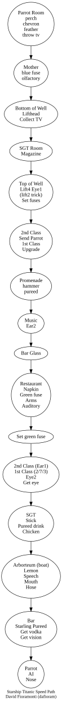
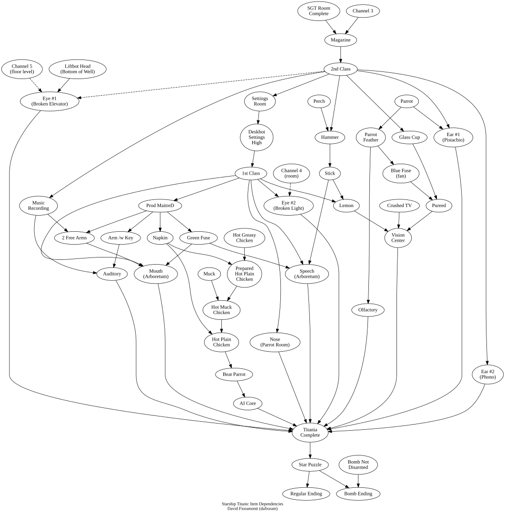

Starship Titanic (PC) Guide
I. Installation
Windows XP
Cannot use GOG. Must install with 3 CDs and then apply version C patch, and then apply Intech old codecs. Even if you do full install you must still swap discs.
You also can't copy the folder and play it on another computer because the drivers the disc install wherever are essential.
Windows 7
Use GOG, but you won't be able to play windowed.
II. Summary
ScummVM can load saved games from the original game, but not vice versa.
Elevator Floors
- Top of the Well: 1 (top)
- First Class: 2–19
- Second Class: 20–27
- SGT: 28–38
- Bottom of the Well: 39 (bottom)
Lift Floor Access
| Lift | 1st | 2nd | SGT | Bottom | Range |
|---|---|---|---|---|---|
| 1 | ✓ | ✓ | ✓ | ✓ | 1–39 |
| 2 | ✓ | ✓ | ✗ | ✗ | 1–27 |
| 3 | ✓ | ✓ | ✓ | ✓ | 1–39 |
| 4 | ✓ | ✓ | ✗ | ✗ | 1–27 |
Fuses
- Red: Creators Chamber. Switch to the right allows the switch in CC to blow up heads; fuse in/out does not matter.
- Green: Changes seasons in the arboretum.
- Yellow: Switch up = shoot chicken chicken; fuse in = hot chicken.
- Blue: Switch right allows the prom fan to turn on; fuse does not matter.
Pellerator Locations
- Top left: Promenade deck
- Top right: 1st Class restaurant
- Bottom right: Arboretum
CellBot Settings Room
Door
Liftbot Bellbot
Barbot Succ
Deskbot Doorbot
Chevron List
Parrot Room
Grey Grey Grey Green Green Green Grey Green Grey Grey Grey Grey Green Green Grey Green Green Grey Grey Green
1st Class Room with Eye
Floor 7, Elevator 2, Room 3:
Grey Green Grey Green Green Grey Grey Green Grey Green Green Green Grey Grey Grey Grey Grey Green Green Grey
Titania Room
Green Grey Grey Grey Green Grey Green Grey Grey Grey Green Green Green Grey Grey Green Grey Green Green Green
The Bridge
Grey Grey Green Green Green Grey Grey Green Green Green Green Green Green Green Grey Grey Green Grey Green Green
Embarkation Lobby
Green Green Grey Grey Green Green Grey Grey Green Grey Grey Green Grey Green Green Green Grey Grey Grey Green
Bottom of Well
Grey Green Grey Green Green Grey Grey Green Green Green Green Green Green Grey Green Grey Green Green Grey Green

III. Item Dependencies

IV. Walkthrough
Some parts of the walkthrough can be used in a different order than the one presented below. Check the "Requirements" section for each piece to see which parts have to be played before others.
Mother
Requirements: SGT Class
Go to the Parrot Room, grab the parrot, then leave the room. You'll be left with a feather. Go to the service elevator (it's in the Embarkation lobby), and head to the Bilge room. Here resides the Mother Succ-U-Bus, who's not feeling well. Activate it, put the feather in the tray, and press "Send". Surprise, it's Brobostigon! Grab Titania's Olfactory Center and the Blue Fuse.
Disarming the Bomb
Note: If you don't touch the bomb, it won't go off. If you touch it, you'll have to solve the puzzle. Well, maybe you don't have to, but it's annoying if you don't.
Requirements: SGT Class
| N | O | B | O | D | Y | ||
| L | I | K | E | S | A | ||
| S | M | A | R | T | A | S | S |
Upgrading to 2nd Class
Requirements: SGT Class
Go to the appropriate elevator and head to your floor (either read it from your Designer Room Numbers or just select My Stateroom on the Remote Thingummy in the elevator). To find the room, just look up and click on the various doors until you find the correct one. You will probably need to use the small elevator to get to your room.
Once in your room, use your PET to Deploy the:
- Personal maintenance hub
- Horizontal worksurface
- The horizontally mobile storage compartment
- The fully recumbent relaxation device
- Inflate the bed
- Operate the visual entertainment device
- Get on the bed
- Look at the TV channel 3
Exit the room and head back to the hallway. Go to the Succ-U-Bus, and press "Receive" to get your magazine. Head back up to the Top of the Well and the Embarkation lobby, go to the DeskBot, activate her, and give her your magazine.
The Broken Elevator
Requirements: SGT (Preferably 2nd Class)
Head to the bottom of the Well, and collect the LiftBot head. Find a TV (Either in your room or in the Parrot Room if you're still SGT class), and check channel 5. Note the floor displayed on the screen, and head to the elevators. You'll find that one of them isn't working (probably #4).
Take the elevator next to the broken one to the floor you saw on the TV, and enter the broken elevator. Take the sphere (it's really Titania's Eye) and replace it with the LiftBot head.
Note: This section is optional. It explains the plot a little better.
Requirements: 2nd Class (Well, kind of)
Head to Titania's room, and enter the FuseBox room. Open the fusebox, turn the red switch sideways, remove the red fuse, and leave. Head to the Creator's room, note the locations of the three busts, and throw the lever at the front of the room.
SCRALIONTIS / THIS LEOVINUS / OTHER BROBOSTIGON / THAT
The Parrot's Pistachios
Requirements: 2nd Class
You'll notice the parrot whining about pistachios occasionally, so it's time to get him some. Well, you can't get the pistachios to the parrot, but you can take the parrot to the pistachios.
Head to the Parrot Room, grab the bugger, go to the Succ-U-Bus, turn it on, and put him in the Succ-U-Bus tray. Drag the Designer Room Number for your 2nd Class Room onto the Succ-U-Bus (you'll hear a tone), and press "Send". Head to the appropriate elevator, the appropriate floor, and into your 2nd Class room.
Go to the Succ-U-Bus, press "Receive", and take the cylinder. The parrot will be freed, but at least he's in the room. Go click on the bowl of pistachios (next to the right-hand bed), and the parrot will eat them. Click on the handle to release the bowl, and take the bowl, which just happens to be Titania's ear!
Upgrading to 1st Class
Requirements: 2nd Class
Getting an upgrade to 1st Class is simple; just ask the DeskBot! Of course, she may not be too cooperative, so head to the Sculpture room and examine the statue that looks remarkably like her. Adjust the two sliders until the top two settings on the side of your PET are both high (yellow) instead of low (red).
This will put her in a much better mood, so head back to the Embarkation Lobby and ask the DeskBot for an upgrade ("Can I have an upgrade?").
Chevron TV
Requirements: 1st Class
Find the nearest TV, and tune to Channel 4. This must be one of Titania's eyes, and it's staring at the ceiling in one of the First Class staterooms. Re-create the designer room number you see there in your PET by holding the SHIFT key on your keyboard and clicking on the pieces of the room chevron (it's upside down).
Save this chevron, and head to the indicated floor using the LiftBot. (It appears to always be Floor 7, Elevator 2, Room 3, but your mileage may vary). Enter this room, and click on the four center lights. You'll notice that one of them is loose, so give the BellBot a call. Have him "Get the broken light", and you'll discover that it's another of Titania's eyes!
The Titanic Titillator
Requirements: 1st Class, Blue Fuse (see "Mother")
Requires collecting:
- Lemon Juice
- Crushed TV Set
- Pureed Flock of Starlings
Jump in the Pellerator, and head to the bar. Look at the TV, and take note of the drink recipe. You see, there's a piece of Titania on the bar shelf, but the BarBot can't do anything but make the drink on the TV. Ring the bell, and take the glass the BarBot sets on the bar. You can ask him about the different parts of the drink recipe, which should give you an idea of how to get them.
Crushed Television
Head to the Parrot Lobby, and summon the BellBot. Ask him to "Throw the television down the well", and he'll gladly comply. Take an Elevator to the bottom of the well, and get the crushed Television. Don't take too long, or it might be gone before you get there.
Pureed Starlings
Head down (up, whatever) to Titania's room, enter the FuseBox room. Plug in the blue fuse, turn the blue knob sideways, turn the yellow knob sideways, and remove the yellow fuse.
Head for the Pellerator, take it to the Promenade deck, and go to the fan. Turn it on, set the speed to "Fast", and watch the carnage ensue (I can't believe I just said "ensue").
Head back to the top of the well, and take an Elevator to any SGT Class floor (28–38). Go to the restaurant, click the switch for a chicken, and put the chicken under the leftmost dispenser. While it's dispensing, hold the empty glass under the chicken to get a glass full of Pureed Starlings!
Lemon
Go to the Parrot Lobby, and grab the perch stuck in the bags. Take the Pellerator to the Promenade deck, and go to the Hammer Dispenser. Use the perch to press the button (you'll hear a tone, and it will take a three times), and grab the hammer.
Go back to the Top of the Well, and take an elevator to any SGT Class Floor. Enter the small room at the end of the hall, look at the glass-encased stick, use the hammer to break the glass, and take the stick.
Go back to the top of the well, and take the Gondola to the Arboretum. Open the arboretum, use the long stick to knock down a lemon from the tree (just swing it at the trees), and take it.
Mixing the Drink
Finally, head to the bar via the Pellerator, and ring the bell.
- Give the BarBot the lemon.
- Give him the TV.
- Give him the glass of starlings.
- He'll ask "What's This", so answer "Pureed Starlings".
- Ask him to "Get the vodka", and he'll make the drink.
- Ask him to "Get the vision center" and take it from the bar.
If you tweak the BarBot's settings before mixing the drink, he won't short out, but instead will use an emergency backup personality (with some interesting, but non-critical results).
"Don't Touch That"
Requirements: 1st Class
The parrot obviously doesn't want you touching the broken light fixture next to the Succ-U-Bus in the parrot room, so there's no better reason to mess with it.
Take the Gondola to the Arboretum, and head to the Pellerator-looking area opposite the real Pellerator and grab the hose. Head back to the Parrot Lobby and over to the light. Use the hose on the light, and you'll be left with the other end of the hose.
Turn towards the Succ-U-Bus, give it the other end of the hose, and he'll blow. Turn back towards the light, and you'll see something rise out of the fixture. Grab it; it's Titania's nose!
Making Music
Requirements: 1st Class
If you've been to the First Class Restaurant, you've probably noticed the horrible music there. Time to do something about it, so head to the Music Room. Take a look at the chairs, note the settings, and duplicate them on the control panel and press the red button to make some beautiful music.
Now, it seems that a lot of people are having trouble with this one, and they also haven't figured out that the solution to this puzzle is on the back of the game box. So, for those people, here are the settings:
- Upper Left: You can't adjust these. Don't bother; they're already correct!
-
Upper Right:
- Vertical Slider — Second from the top
- Horizontal Slider — Third from the left
- Upper Knob — Top to the right
- Lower Knob — Top to the right
-
Lower Left:
- Vertical Slider — Fourth from the top (far bottom)
- Horizontal Slider — Furthest left
- Upper Knob — Top to the left
- Lower Knob — Top to the left
-
Lower Right:
- Vertical Slider — Third from the top
- Horizontal Slider — Fourth from the left (far right)
- Upper Knob — Top to the left
- Lower Knob — Top to the right
So, here's what it will look like:
|
# /
| /
|
--#-
| |
| \ | \
| \ # /
# |
#--- ---#
Finally, all four green lights must be lit. If you have it right, the piece will last about 1:40, and all four instruments will stop at the same time with a final "ping".
Once it's right, turn around and head to the phonograph, and press "Record" (that's the Circle button). Go back to the control panel and play the music all the way through. Go back to the phonograph, stop it (Square button), play it to make sure you've got it (Triangle), and then stop and eject the cylinder (Square twice).
Take the cylinder, back up, and take the phonograph ear, which is really Titania's ear.
Take the Pellerator to the First Class Restaurant, head over to the Maitre'D Bot, rip out his remaining arm, and poke him in the center of his buttocks (no stick required) until he gives in. It will take several tries, and if you're hitting the right spot, he will start complaining ("You are hitting me in my Achilles Buttock!" or something like that).
Once defeated, he will allow you to sit at Scraliontis' table, where you can find a napkin, the Green fuse, and the Maitre'D Bot's other arm, holding the key.
Go to the music system, and unlock it with the arm holding the key. Eject the cylinder (Square twice), set it aside, and replace it with the one you recorded and press "Play" (Triangle).
Head back to the Maitre'D Bot, who will be relaxed enough to let go of Titania's Auditory Center if you got it right. If you got it wrong, he'll let you know, and you'll need to head back to the Music room to re-record it.
The Parrot's Chicken
Requirements: 1st Class, napkin (see "Making Music")
The parrot wants a hot chicken, so let's give him one. If you haven't already, go to Titania's FuseBox room and turn the yellow knob sideways and remove the yellow fuse.
Also, you'll need a Designer Room Number saved from the Parrot Lobby if you don't have one yet. Take the elevator to any SGT class floor, and enter the restaurant. Flip the switch for a chicken (if you already have a cold one, give it to the Succ-U-Bus first).
Use the chicken on your napkin to get a plain chicken. Use the chicken on the middle dispenser to coat it with mustard, and send it to the Parrot Lobby using the Succ-U-Bus (drop in basket, drop Designer Room Number of Parrot Lobby on Succ-U-Bus, press Send).
Next, take the elevator back to the Top of the Well, and head to the Parrot Lobby. Now is a good time to save your game.
Go to the Succ-U-Bus, activate it, press "Receive", grab the cylinder, use the chicken on the napkin again, and head to the cage. Lure the parrot all the way to the left side of the cage, and let him make a grab for the chicken. As he's enjoying his dish, quickly grab the perch, which is really Titania's central intelligence core!
If you miss, just restore your game and try again; it really is possible to do it.
A Change in the Weather
Requirements: 1st Class, both Maitre'D Bot's arms, Green Fuse (see "Making Music")
According to the DeskBot, the RowBot's voice is kind of funny, so let's investigate. Head down to Titania's Room, to the FuseBox room, open it, stick in the green fuse, and turn the knob.
Go back to the Top of the Well, and take the Gondola to the Arboretum. Approach the now-working Arboretum, and change the season to Autumn. Surprise, it looks like another Titania part! Use the long stick to knock it free, and grab Titania's speech center.
Next, change the season to winter. Turn around, and, surprise, the entire place is frozen over! Head over to the area opposite the Pellerator, turn around, and approach the other RowBot.
Click on his chest to reveal two switches; when you hold one down, the other goes up, and you need them both to be pulled down. If only you had another hand... Oh wait, you do! Use the Maitre'D Bot's arms on both switches so they're both held down at the same time.
Now remember, BOTH arms must be empty, and the only way to get them that way is to see the previous section, "Making Music".
Once you've got the RowBot to stop singing by holding down both levers, you can take his mouth, which is really Titania's mouth! To leave the area, you'll need to change the season from Winter to any other one.
Putting Titania Back Together
Requirements: All 11 parts of Titania
Two eyes, two ears, nose, mouth, core, and four centers. Put them all into Titania, with the four centers arranged thusly:
yellow red blue green
Once Titania's working again, the room behind her will open up, allowing you to enter the Bridge.
Going Home
Requirements: Working Titania
Enter the Bridge, and go to the hanging helmet. Use the photo from home in the slot, and use your PET to activate the Navigation control.
If you haven't figured it out, this is the point in the game to use your 3D glasses, although you may do better without them.
Now to the controls... Better go pick up that degree in astronomy, eh? No, it's not really that hard. Titania's navigation controls can be used to triangulate a position based on the photo from your house.
You're going to pick three stars in a relatively small triangle, so go to the photo, pick a star (it will be highlighted with a cross), and return to the starview.
Now, look around the starview until you find the star you just highlighted (it will be marked with a yellow diamond). Line up the cross and the diamond until the coordinate light starts blinking, and press the "L" button on your keyboard to lock the coordinate.
One of the green lights at the bottom of the screen will light up to verify the lock, and the starmap will rotate to lock on. Now, switch back to the house and pick another star.
Back to the star map, find the second star (you only have two degrees of freedom, so controls get weird here), and press "L" to lock the second coordinate once you've lined them up (a line will appear between the locked star and the red cross).
Now, to finish off the triangle, pick a third star in the photo, find and lock it using "L", and finally press "Set Destination".
Exit from the helmet, and head to the wheel. Press the "Go" button, and you're off to home!
Navigation Helmet Controls
For those of you who can't be bothered to look at your instruction booklet, here's how to control the Navigation helmet:
| Key | Function |
|---|---|
| Tab | Toggles between the starmap and the photo of your home |
| Z | Left (or use the mouse) |
| X | Right (or use the mouse) |
| / | Up (or use the mouse) |
| ' | Down (or use the mouse) |
| ; | Forward (or use the mouse) |
| . | Backward (or use the mouse) |
| Space | Stop moving |
| L | Lock a coordinate |
| D | Unlock a coordinate |
V. Gameplay Frequently Asked Questions
"How do I solve all of these puzzles?"
This isn't your standard adventure game, in case you hadn't figured it out. Every puzzle has hints, and there's one person who will always give them to you: the BellBot. When you're stuck, ring for the BellBot, and ask away. It may help you to adjust his settings to make him a little easier to work with, but practically every answer to every puzzle can be found by interrogating him.
The BellBot doesn't have all the answers; the DeskBot and BarBot are very helpful when it comes to gossip and hints about the drink, respectively.
"How do I find my room?"
Use your PET to look at your Designer Room numbers; it'll tell you what elevator you have to take, the floor number to take it to, and your room number. When you stand in front of a door, the Designer Room Number panel of your PET will tell you which room it is.
In SGT class, you can look up and click on the doors to discover what room it is. In SGT and second class, you will probably have to take an elevator to the top.
"What are those little dials on the side of the PET?"
The top dial is the robot's disposition towards you, and indicates whether or not the Bot is likely to help you out. The middle dial is the robot's Cellpoint settings. This appears to be the functionality of the robot, and determines what the robot is capable of. The bottom dial? This appears to be that robot's current usefulness. It's kind of random (except for the BarBot), and you'll get some very interesting responses when it's low.
"What do the sculptures do?"
They adjust the robot's settings. Each sculpture corresponds to a different robot. The parrot can give you hints on which is which, in case you can't tell just by looking at them.
When you approach a sculpture, the PET will move to the Robot Talk panel, and the dials become visible. To make a robot more helpful, just adjust it. The DeskBot, BellBot, DoorBot, and LiftBot all have two controls (Disposition and Cellpoint), where the BarBot has all three.
The Maitre'D Bot's has no settings, but he's in shambles anyway. The sculpture in the middle of the room? I don't know. You can't approach it, so it just may not be anything.
"Why won't the Bots behave or help me?"
Check the dials on the side of the PET; if they're in the red, the Bots are probably not helping out too much. Adjust them in the Sculpture room.
"Where is Titania?"
Titania's room is located above the Top of the Well. To get there, take the stairs near the Top of the Well on the side nearest the Embarkation Lobby, turn around, and enter the neatly hidden door.
"The chicken keeps flying past me! How can I stop it?"
You'll need to break the dispensing system by removing the yellow fuse in Titania's room. See "The Parrot's Chicken" for more information. You can get another chicken by resetting the yellow fuse.
"The Succ-U-Bus keeps eating my chicken!"
See "The Parrot's Chicken" for more information.
"Are there any general hints in the game?"
If the BellBot is in the right mood, just saying "Help" will give you a hint. The BellBot gives both general and room-specific hints, so ask in different areas when you're stuck.
"What's behind the wall opposite the Pellerator at the Top of the Well?"
Hmmm... I don't know either.
"What's the little device to the left of the steering wheel on the bridge?"
That's another stumper. It appears to be some kind of device for looking at the ship's blueprints, but I have no idea how to activate it.
"I had my long stick earlier, and now it's gone!"
This appears to be a bug in the game, but I haven't seen it myself. The long stick disappears for some people, and they can't get another. Contact Simon & Schuster with your bug details, as I can't help you here.
VI. Fun Things to Talk About
After hacking through the executable, I found the word lists for the game. I haven't tried nearly all of these, but I bet asking about at least some of the following can give you some pretty interesting answers... Enjoy!
(Note: the "*"s are my own, for the tenderhearted, not to mention avoiding unwanted search engine hits... Use your imagination for the actual words.)
Interesting words and phrases in the word lists
42 98129812
a game of nib a john
air miles alcohol
aldebaran all wearing womens clothes
allenoid (liftbot) alligator
alqhamra amphibian fanciers club loyalty card
an acolyte anphosterous
answers on a postcard please as to what
are we all doomed are you mad
are you the messiah arthropodsmagazine
asgons tregeriasis bastard
bazonium bbibbet
been to a concert bellbotixcorporation
big bang burger bar bizarre name
blabbering on about blarghish lottery
blerontin girls weekend fellowship blibber (liftbot)
blobby blobby blobby
borg brain-pickler
bread pudding byzantine numismatist
can i have a paper in the morning caprifornium
carb gorgefist cheer me up
cheesecake ciceley neckflap
coaches of nib corn fritter convention
crap crap name
did little red riding hood wear a hood
did the tin man have a heart dixie lee bone
do bears sh*t in the woods do you ever dress up
dodgyelectronstainremover does the pope wear a funny hat
douglas adams dumbass
e=mc^2 enersher real seat belts
ferme la bouche flashbacks
flatterday gigabucklottery
great britain guinea-pigs
have you taken leave of your senses heard of the album
high tea company hiker
how was the war (liftbot)
i am a smartass i am bored
i am fed up with this i am real bored
insurance is the earth round
is not the captain supposed to go down with the ship
is the end nigh is the pope a catholic
is there a therapist on board is wrestling fixed
it is a quantum paradox through which history has been squeezed
jellyfishtrainer kazoo
limpetigo little boys room
little girls room mad bad and dangerous to know
make like a tree and leave mayan arrivan onwhen
mclevity meaning of life
meringue and high tea company milliway
mindreader mucal-salvage plant
mucor accelerator neville sinkmeister
nib no claims bonus
nubianoracle nubiansausagefillers
other cats to whip other fish to fry
pelvicplating p*nis
perch care the low-cost way pesky bird
philosobot pizzabot
planet earth pluvian wart-hog
pocket-sized elephant tetherer pogon
pretend you just summoned yourself printf("hello world\n");
puppies restaurant at the end of the universe
sh*t name Shorbert
shrinkbot similar in size to the left earlobe
starlight under fives sculpture competition
strange-force technology tarbert
tell bob terminator
terra firma tharpoid
that b*tch the boring bot
the cheeky bot the end is nigh
the gat the john
the states the sub
theoretical therapist
this game is crap this game is tedious
tlaserver toad baitingbaiting
toastrack tra la la
transtentorial herniation uncleharry
undercover operation united kingdom
ursorian piccocat v*gina
ve haf vays of making you talk vivian iridium
we are all doomed what in the name of god
what is pi to 100 decimal places
what is the maximum air velocity of an unladen swallow
willan oneat willan ontake
williams willing watchen
worlds lobster wrestling finals you are the messiah
zomboid